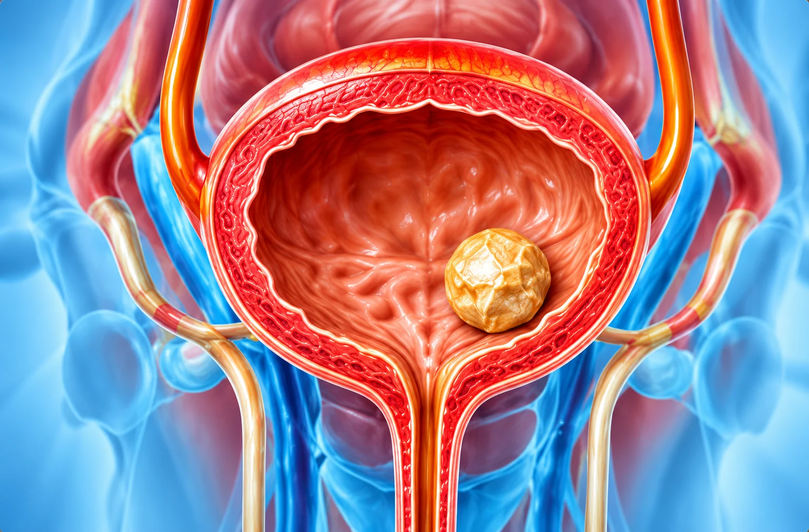

Bladder & Endoscopic Urology
Advanced Care for
Advanced Care for
Bladder Conditions
Specialist evaluation and endoscopic procedures for bladder stones, abnormal bladder tissue, and other bladder-related urinary concerns.
Book Your AppointmentEndoscopic
Evaluation
Evaluation
Bladder Stone
Care
Care
Diagnostic
Assessment
Assessment
Personalised
Care Plan
Care Plan

UnderstandingUnderstanding
Understanding
Bladder Conditions
The bladder stores urine until it is passed from the body. Bladder problems may include bladder stones, abnormal tissue growth, and conditions that affect normal urination.
Different bladder conditions can cause similar symptoms. A proper evaluation helps identify the underlying cause and determine whether medication, further investigation, or an endoscopic procedure may be appropriate.
Common Symptoms
Bladder conditions may affect how frequently, comfortably, or completely you pass urine. Symptoms can vary depending on the cause.
- Blood in the urine
- Lower abdominal discomfort
- Pain or burning while urinating
- Difficulty passing urine
- Frequent urination
- Interrupted urine flow
- Sudden or urgent need to urinate
- Recurrent urinary tract infections
Diagnosis & Evaluation

Ultrasound &


Tissue Sampling,
How Bladder Conditions Are Diagnosed
An evaluation may include urine tests, imaging, and cystoscopy to examine the inside of the bladder.
If an abnormal tissue area is found, a tissue sample may be required. The recommended tests depend on your symptoms.
Ultrasound &
Imaging
Cystoscopy
Tissue Sampling,
If Needed
What to Expect During Treatment
Your care plan depends on the procedure and your individual needs.
Before Treatment
- Review symptoms and test results
- Discuss the planned procedure
During Procedure
- Follow the planned endoscopic approach
- Anaesthesia depends on the procedure
After Treatment
- Follow discharge instructions
- Report significant pain or bleeding
Follow-up Care
- Review results where applicable
- Continue follow-up as advised
Frequently Asked Questions
Your Questions Answered
Cystoscopy uses a thin viewing instrument to examine the inside of the bladder and urethra.
Treatment depends on the size and cause of the bladder stones. A urologist can assess the condition and explain whether endoscopic removal is appropriate.
Symptoms may include lower abdominal discomfort, pain or burning while urinating, frequent urination, interrupted flow, and blood in the urine.
Cystoscopy discomfort varies by patient and procedure. Your care team will explain the numbing or anaesthesia measures planned for you.
Cystoscopy may be recommended to investigate urinary symptoms, blood in the urine, suspected bladder stones, or abnormal areas inside the bladder.
Recovery depends on the procedure. Follow your discharge instructions and contact your care team if you develop concerning symptoms.
TURBT stands for transurethral resection of a bladder tumour. It is an endoscopic procedure used to remove or sample abnormal bladder tissue when indicated.
Blood in the urine should be assessed by a healthcare professional promptly, even if it occurs only once. Seek urgent care for heavy bleeding, inability to urinate, fever, or severe pain.
Need guidance about bladder symptoms?
Consult a urologist to understand your symptoms and the appropriate tests or treatment options.